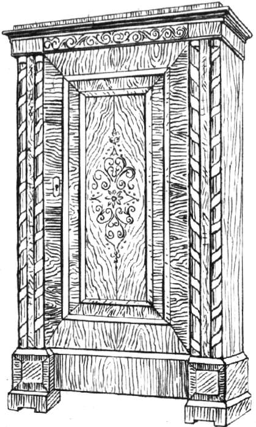
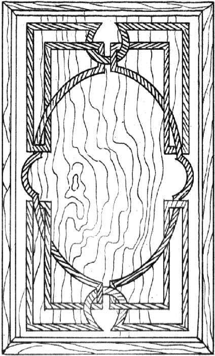
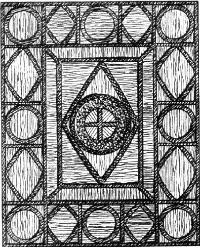
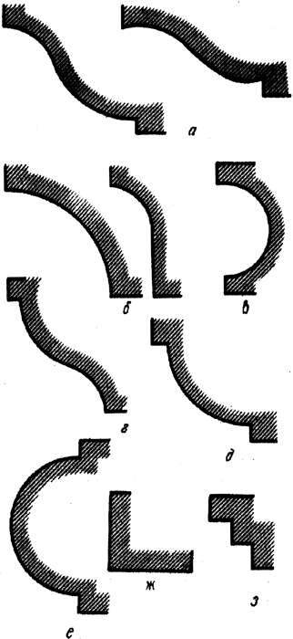
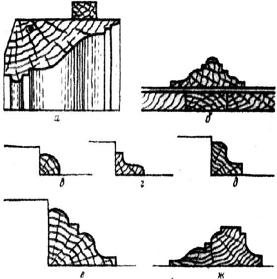
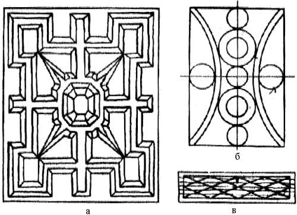

Орнаментальные композиции.
 Линия на плоскости
Линия на плоскости
Как уже отмечалось, композиция орнаментального украшения тесно связана с поверхностью предмета, на которой это украшение размещено. При этом поверхность должна иметь четкие границы – только в этом случае можно говорить о правильности размера украшения, общей соразмерности деталей. Являясь полем для развития орнамента, поверхность одновременно служит и фоном к нему, в особенности это касается поверхностей из дерева, где текстура может иметь важное композиционное значение. Влияние текстуры может быть учтено и при выборе места и мотива для композиционного центра. При одних и тех же условиях характер орнамента, его развитие и выразительность находятся в полной воле мастера-художника. Одна и та же поверхность может быть орнаментирована с разной силой выразительности и самыми разными приемами.
Простейшим элементом орнамента можно назвать линию. Это легко подтверждается памятниками искусства первобытных народов, которые, не овладев еще сложной формой, с успехом применяли полосу и линию как средство украшения поверхности предметов обихода – посуды, одежды, тканей.
В большой степени форма орнаментальной линии связана с технологией ее нанесения. На сырой глине необожженной посуды линия любой формы получалась без труда – продавливанием. Легко нанести линию кистью. В столярном деле линия получается наложением полоски, снятием фасок при стыке смежных деталей, прорезкой в глубь массива, инкрустацией. При этом весьма важно учитывать, что обработка дерева вдоль и поперек волокон носит разный характер и при одних и тех же усилиях дает разный качественный результат. За исключением инкрустации (маркетри) получение разного рода кривых линий в столярном деле является затруднительным. Поэтому, выбирая ту или иную систему орнаментировки на плоскости, следует каждый раз помнить о возможностях исполнения.

Рис. 29. Орнаментальная линия, полученная за счет переходной фаски в смежных делянках щитовой двери шкафа
Декоративная линия на плоскости может использоваться в нескольких случаях. В первом она выступает как граница, что помогает выделить фактуру плоскости. Этот прием дает возможность организовать плоскость предмета или детали, выделить ее среднюю часть как наиболее интересную. Линия здесь создает как бы контур рамки, служащей опорой для глаза при оценке всей плоскости в общем виде. Плоскость, оклеенная шпоном из древесины ценных пород и не имеющая естественных обработанных границ, всегда кажется беднее плоскости, имеющей такие границы. Во втором случае линия берет на себя часть внимания зрителя с целью отвлечь его от относительно бедной фактуры поверхности. Здесь линия должна быть более развитой, заметной и богатой.

Рис. 30. Композиционное усиление линий на плоскости (маркетри)
В третьем случае линия принимает на себя все внимание, становится композиционно главной, а плоскость с ее текстурой превращается в фон для этой линии. В этом случае линия должна быть очень богатой. Характерным примером развития линии такого рода является мебель рококо (рис. ниже), где игра линий заменяла все, при этом не было необходимости в дорогой древесине. Часто мебель делалась даже белой, т. е. малярной отделки.

Рис. 31. Линия как основа композиционного мотива
Сильная выразительная линия может диктовать и влиять на характер общей структуры предмета, как, например, в орнаментировке мебели в стиле модерн начала прошлого века. В этом случае линия довлеет над деревом, заставляя прямослойные куски дерева принимать совершенно противоречащую этой слоистости форму, что не всегда можно считать оправданным.
Развитие линии приводит к использованию линейных элементов профильного сечения. Профильный элемент с точки зрения его выразительности следует рассматривать как элемент линейный, так как любой профиль (рейка, калевка) состоит из ряда узких поверхностей, которые в сборе на детали образуют те же линейные тени и блики.
Орнаментальная плоскость, украшенная профилями, может компоноваться двумя способами: целиком накладкой орнамента, при котором основа ровная по всей композиции, а орнамент выступает, и углубленного орнамента, когда основная плоскость имеет отдельные углубленные или выступающие участки, границы которых отделаны профильным элементом.
Наиболее сложные профили складываются из нескольких простых элементов: гусек, выкружка, обратный полувалик, каблучок, четвертной валик, полочка, тройная полочка.

Рис. 32. Столярные профили: а – гусек циркульный и рисованный; б – выкружка; в – обратный полувалик; г – каблучок; д – четвертной валик; е – полувалик; ж, з – полочки
Делятся профили на мелкие и крупные. Выразительность мелких основана на четкости формы составляющих его элементов. Текстура древесины, применяемой для мелких профилей, должна быть ровной, без крупного резкого рисунка, крупных пор и завитков. Для таких профилей темное дерево более предпочтительно.
Крупные профили представляют собой сочетания деталей большой ширины, на которых текстура древесины отчетливо видна, а мелкие элементы подчеркивают и обрамляют широкую часть профиля.
В зависимости от общего характера предмета одни и те же детали предмета мебели могут быть украшены и мелкими и крупными профилями. Крупные профили придают детали большую монументальность и зрительную прочность. Крупный профиль, созданный только из широких поверхностей и полос, в изделии выглядит грубым, кроме того, в этом случае теряется контраст и профиль становится вялым.
В случае, когда орнамент компонуется из полосок и профилей неровной плоскости, возникает необходимость спустить профили в обе стороны от наиболее выступающей части. Это значит, что профиль должен быть двусторонним. При обрамлении углублений и примыкающих частей основной плоскости профиль может быть односторонним, так как его тыльная сторона будет закрыта кромкой выступающей части опорной плоскости.

Рис. 33. Использование профильных элементов в местах стыков (переходов): а – профиль крупной рамы; б – двусторонний переход на плоскости; в, г, д, е – переходы на уступах; ж – переход от плоскости к резьбе
Плотность орнамента зависит от места детали в предмете и размеров самого предмета. При необходимости выявить текстуру опорной плоскости применяют так называемые рамочные орнаменты, создаваемые из наборных полос, имеющих рисунок. В этом случае внимание концентрируется на абрисе рамки и содержании полосы, из которой она составлена, поэтому очень важно сочетать силу ее выразительности со значением плоскости или детали, украшенной этой рамкой в предмете. Для гармоничного вхождения такой детали в общее целое имеются два композиционных пути: усиление выразительности остальных частей до силы главного орнамента или уменьшение выразительности выбранной орнаментальной темы до получения общей гармоничности всего предмета.
Рамочные орнаментальные композиции являются переходными от линейных к плоскостным. Развитие по ширине плоской рамки приводит к слиянию ее противоположных сторон. Все поле оказывается заполненным системой линий так называемого линейно-сетчатого орнамента. Для композиционного ограничения такой системы краевые части следует окаймлять бордюром, состоящим из линий, отличных от тех, которые заполняют поле. Без ограничения бордюром орнамент выглядит как бы вырезанным из большого куска раппортной системы изображения. Это обстоятельство следует учитывать. В природе очень много красивых и гармонично совершенных линейных форм – снежинки, кристаллы и т.п. Будучи красивыми, они вписываются в прямоугольные формы с трудом или не вписываются совсем. В то же время большое не ограниченное зрительно поле, заполненное такими красивыми узорами, весьма привлекательно. На этом принципе строятся обои или ткань. Геометрическое ограничение их привело бы к большим неудобствам. Не трудно представить, что обои, ограниченные по краям полосой, внутри которой был бы вписан орнаментально-линейный рисунок невозможно было бы гармонично и убедительно состыковать на линиях стен комнаты.
В украшении мебели орнаментами прием использования композиционно несочетаемых фигур непригоден. Несочетаемостью обладают и некоторые обычные геометрические фигуры. Так, в треугольник или пятиугольник невозможно вписать квадрат.
Линейно-сетчатый орнамент не только должен иметь ясные окаймляющие границы, но и само примыкание рисунка к этим границам как на прямых участках, так и в углах должно быть гармоничным и убедительным. Он состоит из пересекающихся или переплетающихся тем или иным образом линий. Случаи концентрического расположения линий (рамка в рамке) встречаются реже.

Рис. 34. Сетчатые композиции на основе линейных элементов из профильных реек (а) и на основе маркетри (б, в)
Сетчатые орнаменты наиболее трудны при выполнении, так как пересекающиеся линии, образованные вклейкой полос, делят поле на множество участков. Художественная выразительность сетчатого орнамента достигается благодаря контрасту линий и фона за счет разницы в тоне или толщине смежных и пересекающихся линий, а также использования различных видов линий (прямых и кривых).
Сетчатый орнамент построен, как правило, по раппорту, но с композиционным ограничением рисунка, чтобы подход внутренней сетки к краям и в углах был органичным, а не случайным. Сетка может быть как прямоугольной с пересечением внутренних линий под прямыми углами, так и косоугольной, где пересечения образуют ромбы. Для сетчатых орнаментов в качестве фигур можно использовать переплетающиеся окружности.
Обратим внимание на следующее обстоятельство: при выполнении сетчатых орнаментов не следует использовать ценные породы древесины, в частности для фона, который, как правило, должен быть светлым, чтобы темное плетение орнаментальной сетки выделялось и могло быть исполнено из более ценных пород. Небольшая толщина линии не позволяет использовать красоту текстуры в полном объеме.
Использование линейных профилей вместо линий, набранных заподлицо, в технике маркетри является приемом, занимающим промежуточное место между плоским и резным рельефным орнаментом. Плотность набора профилей в рисунке орнамента на плоскости находится в пределах: от рамочной композиции, где профили идут по периферии, подчеркивающей внутреннее строение плоскости, состоящей из обвязок и заполнения, до плотного густого набора, под которым скрывается текстура основы. В качестве промежуточного приема профили могут следовать рисунку облицовки основы, подчеркивая ее красоту.
Еще один элемент – орнаментальная полосовая рамка. Она получится, если между краевыми линейными элементами рамочного обрамления поместить какой-либо рисунок, составленный из линий другого направления и формы. Ее композиция отличается важной особенностью – рисунок заполнения и обрамления должен естественно совершать поворот. Если рисунок нельзя естественно, не изменяя характера, повернуть, то в углы вводят специальные вставки, к которым и примыкают элементы внутреннего заполнения полосы. Эти угловые элементы зачастую являются основными композиционными узлами применяемого рамочного украшения.